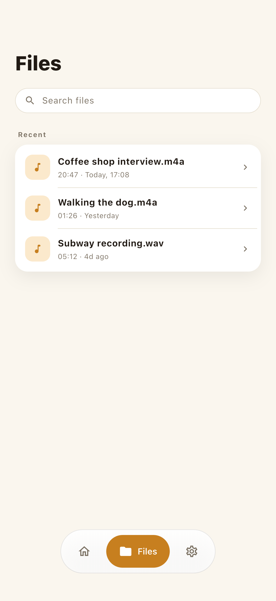

Cómo limpiar la grabación de una reunión con NoisyNo, en 5 pasos
El proceso es el mismo tanto si la reunión fue por Zoom, Teams o Google Meet como si se grabó en la sala con un teléfono: exportar → elegir → limpiar → comparar → compartir. Sin cuenta y sin subir nada.
Pasa la grabación a tu teléfono
Exporta la reunión: Zoom y Teams te dan un vídeo MP4 o un audio M4A/MP3, y una grabadora ya lo guarda en local. Guárdalo en tu teléfono. No hace falta convertir nada: NoisyNo lee los formatos de audio habituales y puede sacar el audio directamente del vídeo de la reunión.

Elige el archivo de la reunión
En la pestaña Files (Archivos), busca por nombre o recorre las grabaciones recientes y elige la reunión; la app solo toca el archivo que seleccionas. Escucha antes unos segundos: el ruido sordo y constante de un ventilador se limpia de forma distinta que una sala con eco, así que te ayuda a ajustar lo que puedes esperar del resultado.

Lanza la limpieza (100 % en el dispositivo)
Toca Clean y el modelo incluido en la app reduce el ruido constante que hay debajo de las voces, sin esperas de subida y todo dentro del dispositivo. Las reuniones largas tardan más; mantén la app en primer plano mientras trabaja, porque si cambias a otra app el procesamiento puede pausarse.

Compara antes de compartirla
Usa el selector Original / Cleaned para comparar el mismo momento: escucha un tramo en el que alguien hable bajo o por encima del ventilador para oír si las voces siguen sonando naturales. Si la versión limpia pierde demasiado, tu original sigue intacto: nada aquí sobrescribe el archivo de origen.

Compártela con tus notas o con una app de transcripción
Toca compartir y envía el audio limpio a donde tenga que ir: notas, un servicio de transcripción, una herramienta de resúmenes, el canal del equipo. No hay cuenta, así que nada se queda en una biblioteca de reuniones en el servidor de otra empresa; el archivo está donde tú lo pongas, y tú decides quién lo ve.

NoisyNo — Voice Noise Remover
Una app para quitar ruido de la voz sin conexión, que reduce el zumbido del ventilador, el siseo, el viento, el aire acondicionado y el ruido ambiente de interiores en grabaciones y en el audio de vídeos. Procesa dentro de tu teléfono, sin subir archivos.
Por qué conviene mantener el audio de las reuniones en tu dispositivo
La grabación de una reunión es uno de los archivos más delicados que vas a crear: condiciones de un acuerdo, nombres de clientes, conversaciones sobre sueldos, temas legales o de recursos humanos. Un «eliminador de ruido online gratis» sube esa conversación entera al servidor de otra empresa. Una herramienta en el dispositivo nunca la envía a ningún sitio, y eso importa sobre todo en llamadas de estrategia interna, reuniones bajo un acuerdo de confidencialidad y conversaciones legales, médicas o de recursos humanos.
Subes la reunión entera
La grabación completa se envía a un sitio web antes de procesarse. Tienes que fiarte de dónde se guarda, quién puede acceder a ella y cuándo se borra de verdad.
Se procesa dentro de tu teléfono
NoisyNo hace la limpieza en local. Ni el archivo de la reunión que eliges ni el resultado limpio se suben a un servidor de GrayForge.
Qué ruido de una reunión puede quitar realmente
La eliminación de ruido en el dispositivo funciona mejor con el ruido de fondo constante: los sonidos continuos que hay debajo de cada voz. Los culpables habituales en una reunión:
- Ventiladores de portátiles y equipos
- Aire acondicionado y climatización con su ruido sordo
- Zumbido y eco de la sala en espacios de paredes duras
- Siseo del micrófono de auriculares baratos o del portátil
- Zumbido eléctrico: el de la red de 50/60 Hz
- Ruido constante de la calle o de la oficina
Lo que no puede arreglar del todo es el sonido repentino y aislado: un portazo, una tos, personas que hablan a la vez. No son constantes, así que es mucho más difícil separarlos.
Conviene saberlo: «no subir el archivo» y «no usar la red» no son lo mismo
La grabación de tu reunión y el resultado limpio no se suben a un servidor de GrayForge: según la política de privacidad de NoisyNo, los archivos se procesan en el dispositivo. Eso no equivale a que la app nunca toque la red: pueden ejecutarse diagnósticos limitados (Firebase Crashlytics, Analytics, Remote Config) para la estabilidad, y no incluyen nombres de archivo ni audio.
NoisyNo no sube tu reunión para procesarla, pero los datos de diagnóstico para la estabilidad no son literalmente cero. Considera el procesamiento de archivos y los datos de diagnóstico como dos ámbitos separados.
Preguntas frecuentes
¿Puedo limpiar la grabación de una reunión sin subirla a un sitio web?
Sí. NoisyNo procesa el audio de la reunión dentro de tu teléfono, así que el archivo no se sube a ningún servidor de GrayForge. Eso importa en reuniones confidenciales, cuya grabación no debería salir de tu dispositivo.
¿Funciona con grabaciones de Zoom y Teams?
Sí. Una vez que exportas la grabación de Zoom, Teams, Google Meet o cualquier grabadora y la guardas en tu teléfono, NoisyNo puede limpiar el audio. Lee directamente los archivos de audio habituales y también puede tomar la pista de audio de un vídeo de la reunión en MP4 o MOV.
¿Qué ruido de una reunión puede quitar realmente?
Funciona mejor con el ruido de fondo constante: ventiladores de portátiles, el ruido sordo del aire acondicionado y la climatización, el zumbido de la sala y un siseo leve. Los sonidos repentinos, como un portazo o una tos aislada, son más difíciles para cualquier herramienta porque no son constantes.
¿Puedo limpiar el audio del vídeo de la reunión, y no solo un archivo de audio?
Sí. Con los archivos de vídeo compatibles, NoisyNo extrae la pista de audio, elimina el ruido y te deja guardar o compartir el audio limpio.
¿Es segura para reuniones confidenciales o internas?
La grabación y los archivos resultantes no se suben a ningún servidor de GrayForge, y no hace falta cuenta. Para la estabilidad de la app pueden procesarse diagnósticos limitados basados en Firebase, que no incluyen nombres de archivo ni contenido de audio. Sigue siempre las políticas de grabación y de datos de tu organización.
¿NoisyNo es gratis? ¿Está para iPhone y Android?
NoisyNo se descarga gratis, sin cuentas, sin anuncios y sin subir archivos, y la eliminación de ruido es gratuita. La normalización de volumen es una función Pro que se desbloquea con una compra única dentro de la app. Está disponible en el App Store para iPhone y en Google Play para Android.
Que tu próxima reunión se escuche sin esfuerzo.
Después de instalarla, limpiar la grabación de tu primera reunión lleva unos tres minutos. Si algo no queda claro, te responde directamente la persona que la creó.
grayforge.dev@gmail.com